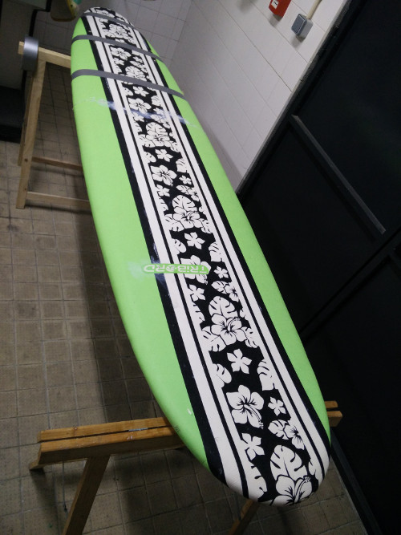

Foam board repair
This is a small project to get my hands dirty and start working with the materials and techniques used in surf board shaping.
I have a nice foam board that was lent to me to start learning how to surf, but over time it started leaking water and the wood stringers started to rot, until finally last winter it broke in half during a particularly strong swell.
Instead of just throwing it in the rubbish bin and buying a new one as everyone who knows anything about this told me to do, I took it down to the lab to use it as a test bed to learn some board repair and shaping techniques.
Opening it up
The first thig to do was to assess how we would approach the repair process. Vinicius helped me remove the fins and lift up the board lining, which allowed us to get to the old rotted wood stringers.
After checking out the board condition, our repair plan was set: replace the wood stringers, try to glue everything back and find a way to seal thr board up again.
New stringers
After carefully removing them, we measured the old stringers and went to the local bricolage shop to buy a couple of pine wood boards with the appropriate measures (we wanted to get plywood, like the original stringers, but it wasn't available at the time)
After that we laid down the old stringer pieces like a puzzle on top of one of the new boards and traced the contour with a pencil. Then we secured the two boards together with clamps and used a jigsaw to cut out the contour of the new stringers.
To help the new stringers repel any water that enters the board we covered them in wood glue mixed with a bit of water (yeah, we should have used wood primer, but this should do the trick for now, as were going to seal the board anyway)
Now it is time to glue everything back.
Glue it up
I glued the board in two stages, using acrylic styrofoam glue I got from the bricolage shop.
In the first stage I glued the two broken halves of the board to give the board its original shape back.

After waiting a day to let the glue cure completely, I added some glue to the bottom of the new stringers to help them better adhere to the board. Then I gently pushed them into their original slots with the help of our lab's friendly hammer :)
I finished by gluing back the board's foam cover, using some duck tape to keep it in place while the glue was curing.

Seal it
Now the board is as close as possible to its original look and feel, but my guess is that even with the glue, it is very likely that the rip in the middle and the cuts we made to remove the top cover of the board will let water seep through to the foam core and start to rot the stringers again.
In order to seal the board properly I first started by learning a bit more about the traditional surfboard lamination process.
This process usually involves using several layers of fiberglass cloth and polyester resin to create a strong composite shell over the board's blank. Fiberglass and polyester resin are somewhat problematic materials, posing some health and environmental issues (skin irritation, volatile organic compounds, etc.).
Epoxy resin is a popular replacement for polyester resin, as it is safer to use and has better mechanical properties, although it is a bit more expensive and still derived from oil. Bio-resins pose an interesting and yet mostly unexplored alternative to epoxy and polyester resins for surfboard building. Although they are more expensive, they are safer and more sustainable that oil-based resins.
For this build, I decided to try the Super Sap bio-resin from Entropy Resins, which is derived as a co-product from the industrial processing of cellulose for the paper industry.
For the fiberglass alternative I looked at several possibilities like basalt, bamboo and hemp fiber and ended up choosing flax since it is somewhat easy to come by and has mechanical properties which are very similar to fiberglass when used in composites (TODO: find the original reference where I got this information from)
I still haven't found a good supplier of flax fiber cloth, but for this build I borrowed some flax samples my dad had lying around.
(this section has only loose notes waiting for a proper re-write)
- peel the thin plastic membrane over the styrofoam
- sand the blank
- dust it off
- apply painter's tape along the rim of the board
- lay out the flax fiber cloth over the blank
- cut the cloth just below the painters tape
- make relief cuts on the corners of the board
materials
- epoxy resin
- mixing pots and accessories
- denatured alcohol
- chemical safety gear (gloves, mask, glasses, old clothes)
- blue painter's tape
- sharp scissors
- squeegee
mix the epoxy
- ~2 oz per foot of board (1 oz = 29.5735 ml)
- 2:1 by volume or 100:47 by weight
- mix well for two minutes
apply the epoxy
- wet out flats first
- start at the center and work out towards the rails
- work the rails in quadrants
- wet cloth well below the tape line
- wipe excess resin (again from center to rails)
- don't overwork the epoxy (or air bubbles will form)
- make sure the cloth is fully wet (saturated with resin), evenly spread and the cloth texture is visible
let it cure
- work time ~1h
- tack-free time ~3.5h (dry to the touch but still flexible)
- sand time ~8h (not fully cured but amenable to sanding)
lightly sand (100 grit) the cured resin surface of board and remove any dust and oils
open trapped air bubbles
Next up
paste coat
- apply a thin, even layer of resin (0.5 oz per foot of board)
- remove any drips from the underside of the board
let it cure
- set/tackify time ~1.5h
hot coat
- get a clean brush
- apply ~1 oz of resin per foot of board applying medium pressure with the brush
- long continuous brush strokes from tip to tail working from the center to the rails
- apply cross strokes with the brush
- apply finishing strokes
sand it
- sand off the gloss with a medium sandpaper and then build it back using finer sandpaper
done
test drive :)
Entropy Resins EU pricing
| 1.5 L | 60 eur (~40 eur/L) | | 3 L | 95 eur (~31 eur/L) | | 6 L | 166 eur (~28 eur/L) | | 15 L | 331 eur (~22 eur/L) | | 30 L | 602 eur (~20 eur/L) |